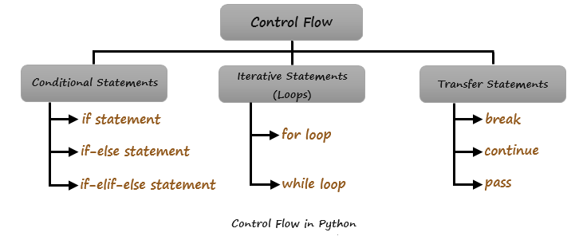

Functions in Python
Control flow in Python refers to the order in which the statements, or instructions are executed or evaluated.
Here are the main control flow tools in Python:

Note: Unlike other programming languages, Python doesn't support switch statements
Conditional Statements
Conditional statements are also known as Selection statements.
Conditional statements allow you to execute certain pieces of code based on whether a condition is true or false.
Below are the main types of conditional statements in Python:
if statement:
Executes a block of code if a condition is true.
Syntax:
if condition: # Code to execute if the condition is truePython Code Example
number = 10 if number > 0: print('Number is positive') print('This statement always executes')Output
Number is positive This statement always executes
if-else statement:
Executes one block of code if a condition is true, and another block if it is false.
Syntax:
if condition: # code to execute if condition is true else: # code to execute if condition is falseNote: else is always optional
Python Code Example
number = 10 if number > 0: print('Positive number') else: print('Negative number') print('This statement always executes')Output
Positive number This statement always executes
if-elif-else statement:
Checks multiple conditions.
Syntax:
if condition1: # code to execute if condition1 is true elif condition2: # code to execute if condition2 is true else: # code to execute if none of the conditions are truePython Code Example
price = 100 if price > 100: print("Price is greater than 100") if price == 100: print("Price is 100") if price < 100: print("Price is less than 100")Output
Price is 100
Iterative Statements
Iterative statements are also knows as Loops.
In Python, there are two main types of iterative statements: for loops and while loops. Let’s explore them:
for loop
Iterates over a sequence (like a list, tuple, or string).
Syntax:
for item in sequence: # code to execute for each item in the sequencePython Code Example
for i in range(1, 5): print(i)Output
1 2 3 4
while loop
Repeats a block of code as long as a condition is true.
Syntax
while condition: # code to execute while condition is truePython Code Example
num = 1 while num <= 5: print(num) num += 1Output
1 2 3 4 5
Transfer Statements
Transfer statements are also known as jump statements or Loop control statements.
These statements alter a way a logic gets executed. They are used to transfer the control from one place to another.
break
Exits the nearest enclosing loop.
Syntax
for item in sequence: if condition: breakPython Code Example
for i in range(10): if i == 6: print("processing enough") break print(i)Output
0 1 2 3 4 5 processing enough
continue
skip current iteration and continue for the next iteration.
Syntax
for item in sequence: if condition: continue # code to execute if condition is falsePython Code Example
for i in range(10): if i%2 ==0: continue #skip this part and forces for next iteration print(i)Output
1 3 5 7 9
pass
Does nothing; it’s a placeholder for future code.
Syntax
if condition: pass # TODO: implement this laterPython Code Example
for i in range(50): if i%10 == 0: print(i) else: passOutput
0 10 20 30 40
Next »